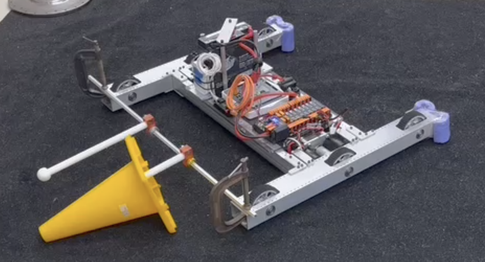
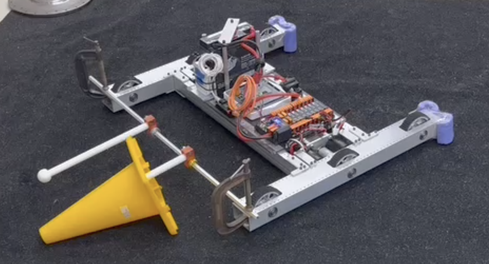

Projects
FRC Robotics
Created a vectored, deployable intake and indexing system with limited space and multi-part stowing capabilities. Experimented with various materials such as 2-in compliant wheels (green wheels), mecanum vectored intake wheels, and gas shocks. Throughout the prototyping process, I worked around various design constraints, such as the intake being unable to handle head-on impact at high speeds, and the stowing system being vulnerable to side impact when deployed.
The intake was required to manipulate game pieces in a non-destructive way, but it also needed to lift pieces over the exterior bumper to transfer into the indexing system.
Replicated a vendor's telescoping linear actuating system to fabricate in house at a fraction of the cost (pictured left). Integrated custom hooks for game application and cut >10 lbs of weight from original pneumatic design.
When creating the intake pictured below, I experimented with rollers of varying sizes to alter the game piece compression and different shaped compliant wheels (larger red 4 inch, cut edges) for better contant with square game pieces. I also tested numerous materials to find an acceptable trade off between flexibility, grip, and durability.
 

Throughout the cube and cone intake design process, I designed rough prototypes using existing lab materials quickly and cheaply. Pictured above is the initial 3d printed cone intake. Based on testing observations, the components were modified and re-tested. For example, the cone intake grabbers were too grippy, making the slide-on intake difficult. To alter the 3D printed parts, I used acetone to smooth down the exterior of the rounded ball end, which significantly decreased friction between the intake and the rubberized material of the cones, improving its functionality.